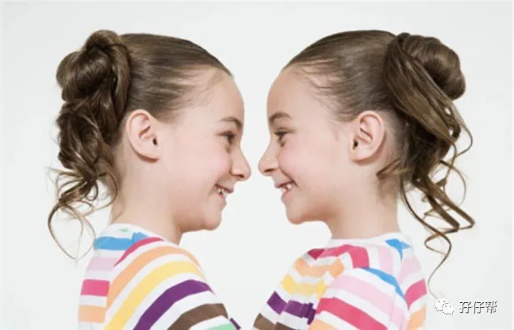
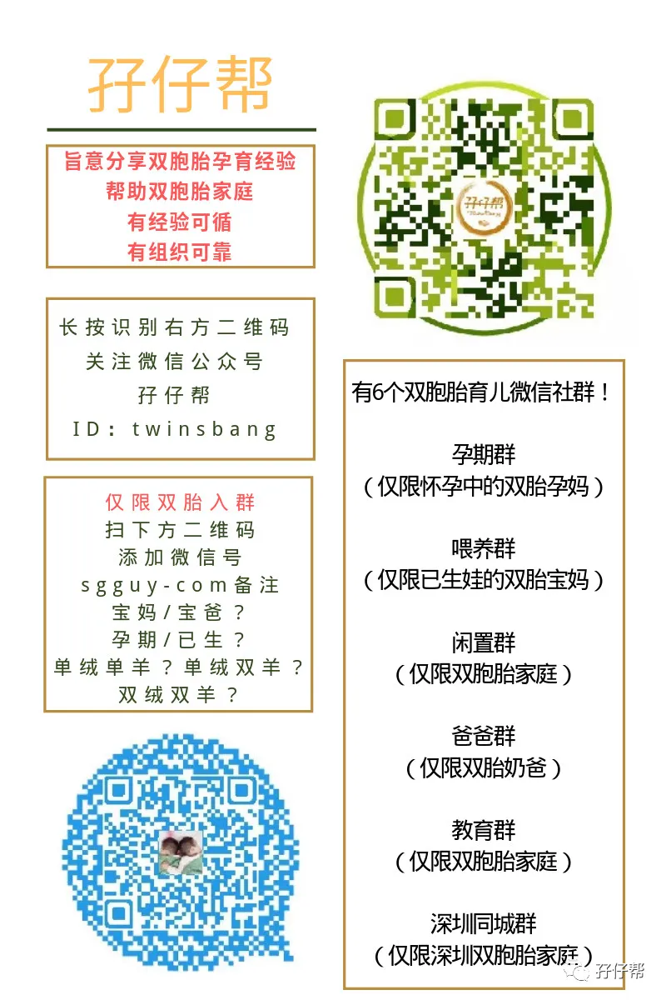

文|圆圈妈，一个文思如尿崩的双胎妈妈
图|来自网络，如有侵权，请联系删除
参考资料|《世界之谜----双胞胎的“心灵感应”》
· 正 · 文 · 来 · 啦 ·
【01】
据说，双胞胎最讨厌被问到「有没有心电感应」的问题，我不知道是真是假。
其实，作为双胞胎孩子的妈妈，我也很想知道我的双胞胎儿子们到底有没有心灵感应这回事，免得总是被某些路人甲问到这样的问题，而我只能苦笑着回答：“天晓得！”
《世界之谜》有一章节提到《双胞胎之谜----双胞胎到底有没有心灵感应》
文章中提到北京师范大学儿童心理研究所的陈会昌教授关于双胞胎心灵感应的观点。
他表示，在我国，这种现象并没有进入科学家的研究领域，仍然属于所谓的“超心理学”问题。
科学工作者更多地把这种现象与遗传基因的相同或相似联系起来，国外一些研究者把“心灵感应”定义为排除借助所有已知的，可能的物质传递方式而出现的心灵信息传递现象。
要证明这一现象的存在，需要有统计上的重复性，而到目前为止，还没有科学的证据证明“心灵感应”现象的存在。
而国外的研究者则表示“心灵感应”与基因相关。
在英国的约克有这样一对双胞胎，她们的外貌，性格，思维，行为方面和爱好都完全相同，而且声调都一样，甚至她们说话打手势时所指的方向也是一致的，两人走路的时候，手和脚的动作也完全相同。
双胞胎之间能互相感觉到痛苦，戴夫格莱斯的胃部疼痛让他感到有什么不对劲的事，他马上打电话给几乎远在半个国家距离之外的同卵双胞胎丹，他的疑虑得到了证实：丹正感到难过，因为她刚失去了工作。
有研究者指出，所谓的“心灵感应”一般都发生在基因完全相同的同卵双胞胎之间。
这表明，这一现象的发生是与基因的相似程度直接相关的。
简而言之就是，因为双胞胎朝夕相处，通常更懂得彼此的想法及需求，加上遗传基因的影响，做事情决定的方式也及其相似。
但这并不代表有心电感应，只是人们会不断地放大及以偏概全，彷佛双胞胎就等于「心电感应」。
电影《宝米恰恰》讲述导演杨贻茜身为双胞胎的真实成长经验，她也曾分享：「双胞胎其实没有心电感应，很多时侯彼此也不知道对方想什么，而且也不想知道对方所有的事。」
【02】
以上说法似乎都认同“心灵感应的说法缺乏科学的解释”，但生活中也有很多案例支持双胞胎的心灵感应有时候确实存在的。
比如这对澳大利亚昆士兰州的双胞胎姐妹花，布里奇特(Bridgette)和宝拉(Paula)的经历。
她们一起录制了《早安英国》这档节目。
在4分钟的访谈中，她们出奇一致地回答了所有的问题，令人惊叹不已。
布里奇特和宝拉这对双胞胎姐妹花长得几乎一模一样，并且从出生起就没有分开过。
姐妹俩说，有时的确会感觉如同一个人，比如说穿相同的衣服、共享同一部手机。
她们说：“一起做一件事时，我们知道彼此在想什么，也知道下一步该怎么做。因为有相同的兴趣爱好，我们的时间都是一同度过的，一起逛街、一起救护动物，像一个团队一样地工作。
她们也不明白为何回答每个问题都能做到异口同声，但坚持认为这是自然发生的，而非事先演练过。
还有一个发生在我自己身上的真实案例，一个至今让我惊魂未定的“电梯咬人”事件。
经历过那次事件后，我更愿意相信并希望这世上真的有双胞胎有心灵感应的存在。
有一次，我们一家四口在商场搭乘扶手电梯下行，当时宝爸牵着圈圈走在前面，我牵着圆圆走在后面。
圈圈这会儿特别哭闹，一直闹着要折返回去玩奥特蛋，宝爸不得不回头拉住他，就在那一瞬间，我们几乎都不约而同地意识到圆圆的鞋子卡在电梯边的缝隙上。
也是在那么一瞬间，在电梯只压到圆圆的鞋面时，把他的右脚在千钧一发之际拔了出来。
事后，我细细回想当时的情形，要是圈圈没有哭闹，要是宝爸没有回头，要是我们都没有意识到圆圆的脚卡住了，要是他的脚没有拔出来...
恐怕…已经被搅碎了….
以前看一些电视节目或者文章中说到，双胞胎中的A心脏猛的跳了一下，或是一直心绪不宁，这时候双胞胎B就真的出了什么事。
想不到这种事情真的发生在自己身上。
我们都深信不疑地认为，圈圈当时异常哭闹是在给我们发送信号，提醒麻痹大意的我们，他的双胞胎哥哥有潜在危险。
也许，这是巧合。
也许，还有点迷信，跟“左眼跳灾右眼跳吉”同一个道理。
但，我更愿意相信是他们哥俩的心灵感应避免了这场意外的发生。
【03】
心灵感应的定义是一个人接收到另一个人的思维信号。
圆圈兄弟是同卵双胞胎，就像同一张比萨饼完全对等的两半。
在娘肚里，从一个受精卵开始发育，最后一分为二，他们就像是对方的复制品，彼此一模一样。
这样强大的基因偶尔彼此有点未卜先知或是心有灵犀也实属正常。
从他们的成长历程来看，他们的“心灵感应”不止体现在一起生病，就连受伤的部位，跌倒的位置都分毫不差。
今天圈圈被厕所门把手磕破额头，过几天圆圆也被小区的自动门弄伤额头，居然都是左侧额头。
早晨发现圈圈的脚踝有点淤青，晚上洗澡时发现圆圆的脚踝也是有同样的淤青，而且性状都是一样的。
上次是圈圈掉坑里擦伤左脚，这次是圆圆在同一个坑里摔倒，擦伤右脚，真邪门…
强烈建议家有双胞胎的家庭，如果双胞胎其中一个有异常，请格外注意另外一个。
这也许是一个暗号，在提醒你，家有两宝，多操一份心。
我不知道在没有科学依据的情况下，做这样的结论会不会有点危言耸听。
但不得不承认，双胞胎孩子的特殊性有时候真的跟世界未解之谜一样，猜不透，摸不着…
我选择“宁可信其有不可信其无”。
我不迷信。
其实更多的是，希望我的双胞胎孩子比其他兄弟姐妹更有默契感，能自发形成一股超亲密的手足力量，保护着彼此...
双胞胎是否有心灵感应
恐怕只有双胞胎本人才有发言权了
☟☟一起来看看这段短视频吧☟☟
最后，脑洞大开下！
希望科学家们早日攻破“心灵感应”这一难关，研发出制服双胞胎熊孩子的育儿神器，造福我们这群苦逼的双胞胎家庭。
比如，让安静乖巧的妹妹去读取捣蛋调皮的哥哥的内心世界，然后给我们做家长的通风报信….
O(∩_∩)O哈哈~
本期讨论
#你家的双胞胎有哪些“心灵感应”的现象#
欢迎留言区分享出来哦！
-END-
关于这个号
谢谢关注！
我是圆圈妈
85后，全职妈妈
家有孖仔两枚，圆圈&圈圈
双胞胎育儿公众号：孖仔帮
ID:twinsbang
旨意分享双胞胎育儿经验帮助双胞胎家庭
有经验可循
有组织可靠
希望我的经验对您有所启发
期待与您一起共享双胞胎育儿经

